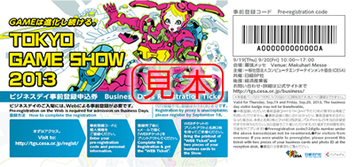
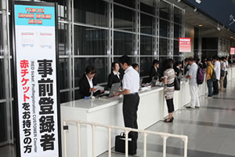
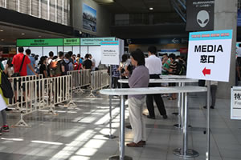
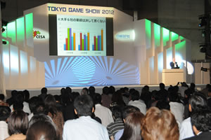
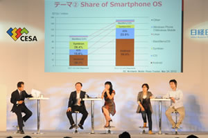
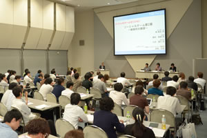

The first visit to TGS -Business Day Version-


- The picture shown here are from TGS2012. Please look at them for your reference.
Points that you need to check before the previous day
If you are planning on visiting TGS2013 on Business Days, have you finished your pre-registration?
People who are allowed to enter the site on business days are those related to game business (employee of a game-related company, people working in the game-related industry, people considering to do business with game-related companies and people related to distribution). Please obtain the "Business Day Registration Ticket" that the exhibitors, etc. give to affiliated people, and register from the official website. Or, you can just simply pre-register from the website (for 5,000 JPY ＜including tax＞).

Business Day Registration Tickets are given to game business related people by the exhibitors, etc.
On the website, please enter the private information that will prove that you are a person engaged in the game-related work. The Management Office will review the provided information and only the people who were approved by the Management Office are allowed to enter. People under age 18, students and people not engaged in game-related work are not allowed to enter.
If you wish have a receipt issued for the 5,000 JPY pre-registration, URL of the page where you can get the receipt is written in the email informing that pre-registration has been completed, so print the receipt from that page.
On the day you come to the site, the staff at the reception will check to see if you are the same person as the person who pre-registered. Please show the "Web Ticket" which you can download from the pre-registration completed email, a certificate with your photo and 2 name cards.

Business Day Registration Ticket is given to game business related people by the exhihitars,etc.
If you are a press person planning to do some press activities at the venue, have you finished your pre-registration?
We recommend any press person planning to do some press activities on the business days to pre-register from the website, as the reception counter is expected to get very busy on those days. However, it is also possible to do some press activities upon application at the venue on that day.
Please fill in the necessary information in the "Press Activity Application Form" and hand in 2 name cards, some certificate with a photo such as a company employee certificate or a driver's license, a copy of or the actual latest signed article, editing staff column with your name, URL of the medium, at the Press Reception Counter.

Have you reserved your hotel?
Hotels around Makuhari Messe, which is the site for TGS2013, will be difficult to reserve at the last minute or on that day during TGS2013.
Stations with easy access to Makuhari Messe are JR Keiyo Line, Kaihin Makuhari station, which is the closest station, and JR Sobu Line, Kaihin Hongo station where bus services are available to the site. It is also possible to use hotels along those railroad lines.
There is no official tour on business days.
Have you checked the contents of the exhibitors?
The latest information on the contents and the events in each booth can be obtained from the official website or the website of the relevant exhibitor. In the official website, floor map and the contents of each exhibitor will be announced just before the Show.
Also, on the the official website, news of the media partners and the exhibitors will be updated as needed. It will allow you to check any information beforehand.
The official account of TGS2013 for social networking service is shown below:
- Twitter：「Tokyo_Game_Show」
- Facebook：「Tokyo Game Show」
You can also get new information from these services. Please be our follower.
Have you applied for the "TGS Forum Keynote"?
On the first day of the Business Day, September 19 (Thursday), TGS Forum Keynote will be given from 10:30 a.m. at the event stage in Hall 8. It is FREE of charge. You can apply on that day by presenting 2 name cards, however, priority is given to people who have applied in advance. Therefore, if you really want to attend, we advise you to apply in advance.
Please print the "application completed screen" and bring it to the site on that day.
For your information, it is not necessary to go through the entry reception counter of TGS to listen to the "Keynote". If you don't have the time to go through the entry reception counter, please come directly to the Keynote reception at "Event Stage in Hall 8".

Have you applied for "TGS Forum Asia Game Business Summit"?
On the first day of the Business Day, September 19 (Thursday), "TGS Forum Keynote" will be held from 1:30 p.m. at the event stage in Hall 8.
Representatives of the game companies in various Asian countries like Indonesia, Korea, Taiwan, Thailand and Malaysia will get together and talk about the challenges and future vision of the game industry.
It is FREE of charge. You can apply on that day by presenting 2 name cards, however, priority is given to people who have applied in advance. Therefore, if you really want to attend, we advise you to apply in advance.
Please print the "application completed screen" and bring it to the venue on that day.
For your information, it is not necessary to go through the entry reception counter of TGS to listen to the "Asia Game Business Summit". If you don't have the time to go through the entry reception counter, please come directly to the reception of Asia Game Business Summit at "Event Stage in Hall 8".

Have you applied for "TGS Forum Special Session"?
On the second day of the Business Day, September 20 (Friday), "TGS Forum Special Session" will be held in the afternoon to provide you the latest information on the game industry.
Fee of 8,000 JPY for advance tickets and 10,000 JPY for on the day tickets (including Business Day Registration Form) will be necessary. You can apply on that day by presenting 2 name cards, however, priority is given to people who have applied in advance. Therefore, if you really want to attend, we advise you to apply in advance (It can apply only from Japan.).
For your information, it is not necessary to go through the entry reception counter of TGS to listen to the "Special Session". If you don't have the time to go through the entry reception counter, please come directly to the Special Session reception counter on the 2nd floor of the International Conference Hall.

Have you already made appointments for your meetings?
Please utilize business matching system, "Asia Business Gateway", if you want to have a meeting with Business Day exhibitors.
This is an appointment system that provides visitors the chance to have business meetings with the exhibitors during TGS2013.
Visitors can search by any information such as techniques, products and services, and get in touch with the person in charge at the exhibitor's company and request for a meeting during Business Days.
Of course, it is possible to have a business meeting without an appointment, but if you pre-register to Asia Business Gateway, you can have meetings more efficiently. We advise you to make the best use of this system.